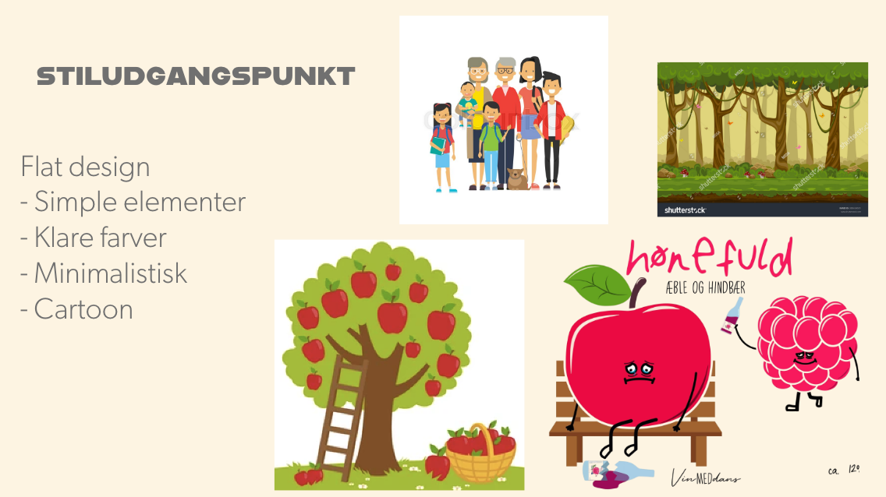

Tema 04 Grundlæggende animation
Temabeskrivelse
I dette tema vil du blive introduceret til programmeringssproget javascript, som er en uundværligdel af det moderne internet og bruges til at kode avancerede og dynamiske websites samt skabeinteraktive elementer, som burgermenuer, slideshows, snap scrolls etc.I dette tema har vi valgt, at du skal bruge javascript sammen med css animationer, til at skabe et lillespil. Dit spil skal have et koncept og en ide, som du selv finder frem til og du skal selv designe alleelementer og kode spillet helt fra bunden. Tema 04 - Grundlæggende animationPå dette tema lægger vi særlig vægt på, at du begynder at arbejde professionelt med formgivning afgrafiske elementer. Vi analyserer spildesign og ser på hvordan de engagerer brugerne gennem teoriog konventioner inden for UI-elementer, figurelementer, baggrundsdesign ogkompositionsteknikker. Du udvikler dit eget spildesign efter moderne konventioner og rentegnergrafikken til spillet i Adobe Illustrator.Gennem arbejdet med dit eget spil vil du lære at arbejde med aktivitets- og statemachine-diagrammer, som bruges til at planlægge det mere komplicerede interaktive flow.Principperne fra css og javaScript, som du lærer her, vil du senere på semesteret kunne videreføre tilat udvikle mere avancerede websites.
Link til afleveringer
Pitch
Spillet skal foregå i en skov/æbletræs plantage hvor der falder æbler Ned fra træerne. Her skal man samle alle de gode æbler og undgå at samle dem med larver. Hvis man samler dem med larver så mister man liv.
Arbejdsproces
Spilbaggrund fra start til slut


Startskærm fra start til slut